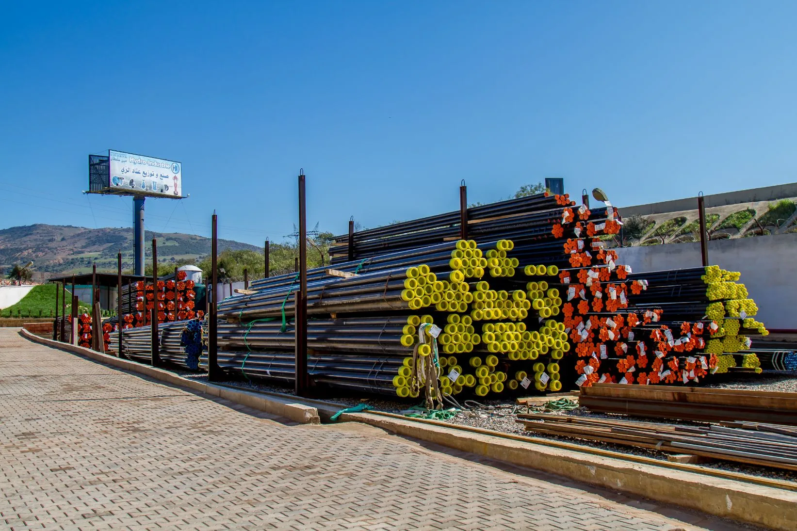
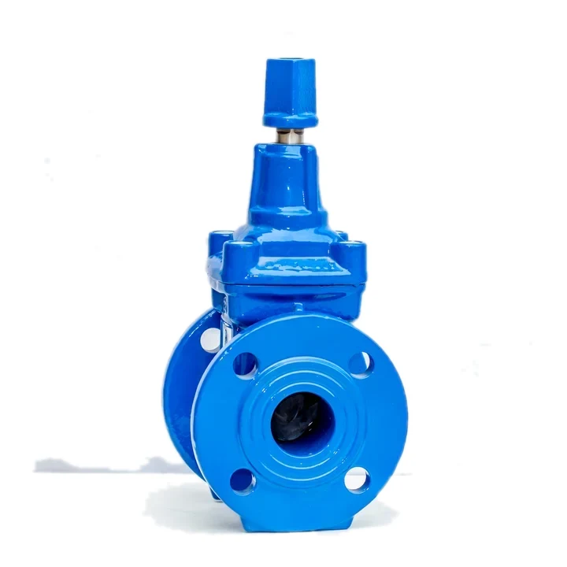
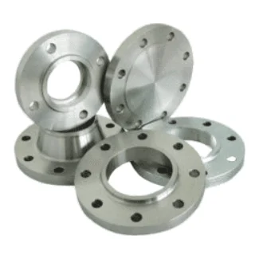
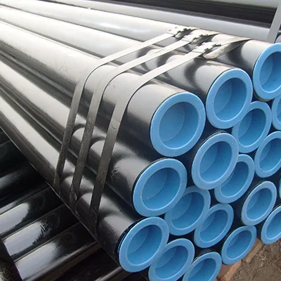
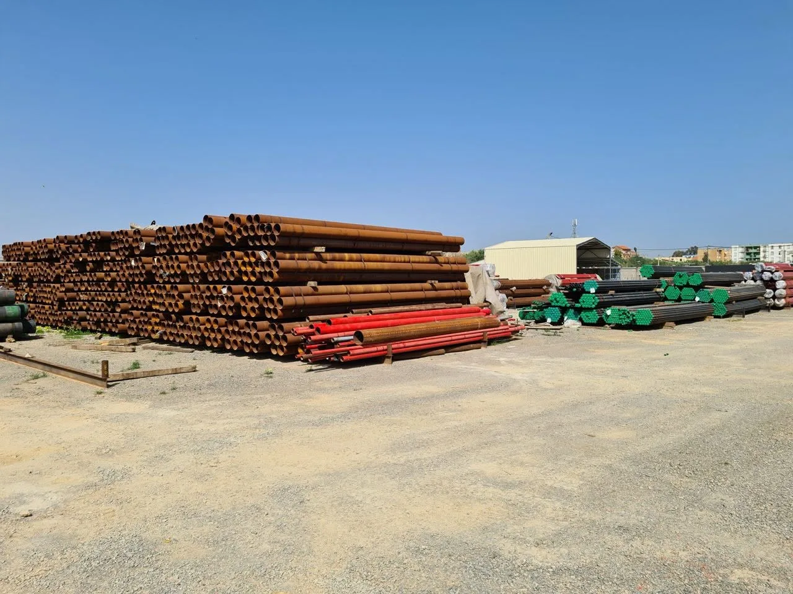
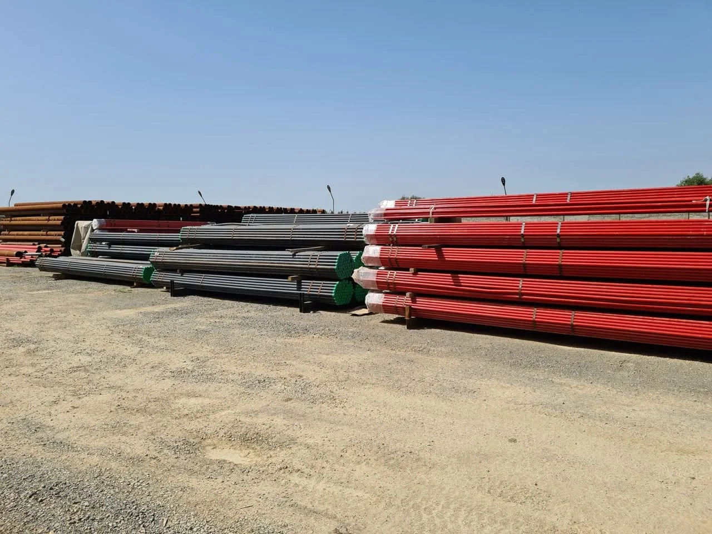

Robinetterie industrielle, protection incendie, accessoires de tuyauterie et tubes acier pour l’eau potable, l’irrigation, l’assainissement et les hydrocarbures.
Du robinet de réservoir au tube spiralé de grand diamètre : un seul interlocuteur pour équiper vos chantiers.

Vannes, clapets, ventouses et régulation pour réseaux d’eau.

Soupapes de sûreté, vannes vapeur, filtres et clapets acier.

Poteaux HERO, RIA, sprinkleurs et groupes électropompes.

Brides, raccords, manchons et pièces de raccordement.

Sans soudure, revêtus, galvanisés, spirale jusqu’à DN 72″.



Filiale du Groupe Kherifi, Hydro Industrie SARL fabrique depuis 2010 une large gamme de robinetterie industrielle et d’accessoires de tuyauterie dans son usine d’Ain Soltane (Ain Defla).
En partenariat avec des fabricants de renom, nous importons et distribuons les équipements destinés aux secteurs hydraulique, hydrocarbures et industriel, avec des prix étudiés et la capacité de répondre à toutes les commandes.
Une sélection de références sorties de notre usine. Cliquez sur un produit pour voir sa fiche.
Un stock disponible immédiatement et un atelier pour adapter les tubes à vos plans : coupe, soudure, revêtement.



Vannes, ventouses et pièces pour réseaux AEP et réservoirs.
Clapets à boule, vannes guillotine et ventouses dédiées.
Bornes d’irrigation, vannes et tubes pour périmètres agricoles.
Poteaux, RIA, sprinkleurs et tubes revêtus RAL 3002.
Soupapes de sûreté, filtres et tubes API 5L.
Circuits vapeur, transport de fluides, forage.
Notre équipe commerciale vous répond avec une offre chiffrée et les délais.